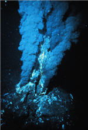
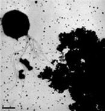
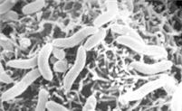
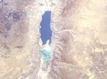
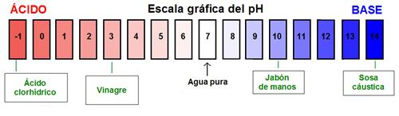
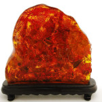
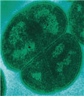
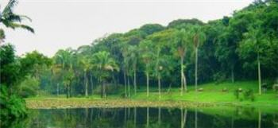

Formas de vida extrema en nuestro planeta
¿Es la vida un fenómeno común en el universo, o es una rareza de nuestro mundo?
Esto es algo sobre lo cual los científicos no pueden decir nada definitivo todavía. Pero lo más probable es que sea muy diferente a la vida que conocemos en nuestro planeta. Aparte de que aún no conocemos bien la vida en este planeta.
En este artículo les hablaré sobre algunos seres vivos que viven en condiciones en las que no esperaríamos vida alguna, y con organismos que soportan el calor extremo hasta otros que resisten radiaciones capaces de matar instantáneamente a la mayoría de los seres vivos, veremos que la vida es posible en los lugares más insospechados.
Viviendo en el infierno
A mitad del Océano Atlántico se encuentra un relieve submarino entre placas tectónicas llamado Dorsal Mesoatlántica, de donde emerge lava continuamente por las fisuras donde la corteza terrestre es más delgada .
En esta dorsal, existen respiraderos hidrotermales, o sea fuentes de agua caliente. Algunas de estas fuentes son llamadas fumarolas negras, que expulsan agua extremadamente caliente y rica en minerales, estos últimos al entrar en contacto con el agua fría del océano se precipitan, formando alrededor del respiradero una estructura similar a una chimenea.
Pues bien, esas fumarolas negras se ubican a una profundidad promedio de 2100 metros, y la temperatura del agua puede llegar a los 400 ºC.
Si ya tienes una imagen mental del sitio, te cuento que en 1997 fue descubierta una familia de microbios en uno de estos lugares, a una profundidad de 3650 metros. Este organismo lleva el nombre de Pyrolobus fumari, y puede sobrevivir a una temperatura de 113 ºC.
Pero hay otro organismo que soporta más calor todavía: Un microbio unicelular, que lleva el poco glamoroso nombre de Strain 121 de la familia Archaea, y que fue encontrado en otro respiradero hidrotermal, con la diferencia de poder vivir, crecer y reproducirse a 121 ºC.
Esta temperatura de 121 ºC es la utilizada generalmente para esterilizar equipo en medicina y en la industria farmacéutica. Pues este organismo, soportó en laboratorio tal temperatura por diez horas sin ningún problema y reproduciéndose como si nada.
Otra característica curiosa de este microbio es que Strain 121 utiliza hierro de la misma forma que los animales aeróbicos utilizan oxígeno, es decir, ‘respira’ hierro.
Viviendo en frío
La mayor parte de la biosfera es marina y es fría, y como es evidente, esto es más acentuado en los polos. Con la mayoría de los microbios siendo capaces de sobrevivir hasta los -20 ºC, existe una bacteria llamada Colwellia Psychrerythraea la cual podría soportar los -196 ºC.
Colwellia pertenece a un tipo de microorganismos llamados psicrófilos, los cuales se caracterizan por poseer membranas químicamente resistentes al endurecimiento por bajas temperaturas, y por ser capaces de producir proteínas ‘anticongelantes‘ para mantener su estructura interna líquida, protegiendo así su DNA de temperaturas por debajo del punto de congelación del agua. Como dato extra, también soporta las presiones del agua en mar profundo.
Esto hace a esta bacteria particularmente importante para la ecología marina de los polos, y además su análisis genético sugiere que tiene enzimas capaces de descomponer el pentaclorofenol (PCP). (El pentaclorofenol es una sustancia tóxica y mortal para los seres humanos y para la mayoría de los seres vivos). Lo anterior hace a Colwellia Psychrerythraea importante para una posible restauración ambiental en medios ambientes congelados.
El Mar Muerto no lo es tanto
La concentración de sal que existe en el Mar Muerto, ubicado entre Israel, Jordania y Cisjordania, haría pensar que no hay vida ahí (otras razones, no tan evidentes, es el bajo nivel de oxígeno y la alta intensidad de la luz de ese entorno).
Pero existen microorganismos que se han adaptado a tal ambiente, como la bacteria Haloarcula marismortui, la cual posee complejas respuestas proteínicas para protegerse de la alta concentración de sal.
Esta bacteria no es única solamente por sobrevivir en un entorno salado, sino también por su resistencia a los rayos UV (ultravioletas), los cuales son capaces de alterar el DNA de una célula. De hecho, en microbiología este tipo de rayos se utilizan para matar microorganismos. Pues resulta que Haloarcula marismortui, por vivir en un medio con tanta exposición a la luz, tiene su composición interna modificada de tal manera, que minimiza el daño que pueda sufrir su información genética.
Más formas de vida sorprendentes
Sin duda habrán oído hablar del pH (una medida química), si no lo han hecho o no saben a qué se refiere les explico:
El pH se refiere al nivel de actividad de iones de hidrógeno en una sustancia, y podemos decir que su pH mide el nivel de acidez o de “basicidad” de dicha sustancia. Si el pH es mayor a 7, la sustancia es una base, si es menor a 7, se trata de un ácido. El agua (pura, destilada) tiene el pH 7.
Un dibujo para explicarlo mejor:

Como pueden ver, un pH muy bajo, o muy alto, está relacionado con sustancias que sabemos son tóxicas, y que incluso pueden ser mortales, y así como lo son para nosotros, así son para la mayoría de los seres vivos.
Vida en los extremos del pH
Ahora bien, un entorno con un pH muy cercano al del ácido clorhídrico (si, el del destapacaños), es el hábitat de las bacterias del género Picrophilus: nada menos que a 0.06 pH. Pero tienen la desventaja de que en un entorno con un pH superior a 4 mueren.
Del otro lado (de la escala pH), tenemos a Natronomonas pharaonis, un organismo que sobrevive a condiciones cercanas a las de la sosa cáustica, con tolerancia a un pH de 12.
Casi inmortales
Los microorganismos pueden sobrevivir durante mucho tiempo, y en escalas que nos pueden parecer enormemente largas. En 2007, en Siberia, se recuperaron bacterias activas con una edad estimada de medio millón de años. Pero claro, si se trata de encontrar la bacteria más vieja, hay espacio para afirmaciones increíbles en la comunidad científica, ya que, bajo ciertas condiciones, las bacterias pueden quedarse en un tipo de suspensión animada (en inglés), o sea, mantenerse vivas a un ritmo extremadamente lento.
{kind=link}
En 1995, un grupo de científicos dijeron haber reanimado a una bacteria que había estado atrapada en el interior de una abeja preservada en ámbar por 25 millones de años. Y por si esto fuera poco (si lo comparan, lo es), en el año 2000 otro grupo afirmó haber traído de vuelta a la vida a otra bacteria, pero esta, de 250 millones de años de edad.
(Lo que me recuerda a los mitos que existen sobre personas extremadamente longevas, pero claro, esto es más probable).
La bacteria más ‘dura’ del planeta
Así denomina el Libro Mundial de los Récords Guinness al último de los organismos que comentaremos: el Deinococcus radiodurans.
En 1952, un grupo de científicos trataba de averiguar si era posible esterilizar alimentos enlatados con rayos gamma (radiación, y de la fuerte). Para ello sometieron a latas de carne a dosis suficientes para matar a cualquier organismo conocido. La bacteria más resistente del planeta fue descubierta cuando a pesar de eso, la carne se descompuso.
Deinococcus radiodurans es una bacteria capaz de soportar niveles de radiación de 5000 Gy sin ninguna dificultad, y sobrevivir a una exposición de 15000 Gy. Para ponerlo en perspectiva, un ser humano muere si es expuesto a una dosis de 10 Gy. (Gy es abreviatura de gray, la unidad de medida de la radiación).
También es resistente a la luz ultravioleta y a la deshidratación, entre otras cosas. Por sus extraordinarias capacidades de resistencia, este microorganismo ha sido modificado genéticamente para digerir solventes y metales pesados, así como otras sustancias relacionadas con el procesamiento de material radiactivo (fabricación de armas nucleares o manejo de desechos de centrales nucleares).
El origen de su resistencia se explica en parte debido al ritmo de reparación ante daño por radiación que posee, y al hecho de que cuenta en forma estacionaria con 4 copias de su genoma, llegando a tener entre 8 y 10 copias cuando está en fase de multiplicación. (Las células de los organismos comunes y corriente solo tienen una copia). De ahí que cuando la radiación destruye sus cadenas de ADN, pueda recuperarlas, y lo hace a un ritmo increíble (las reconstruye en un tiempo de 12 a 24 horas).
Todo esto hace que sea muy importante en el desarrollo de organismos súper-resistentes, y hay quienes dicen que incluso el ser humano mismo puede ser beneficiado directamente con el estudio de esta bacteria. Entre ellos, el investigador Aubrey de Gray, quien afirma que el Deinococcus radiodurans puede ser la clave para la juventud eterna (Relacionado: Conferencia Envejecimiento 2008).
Además, debido a sus extraordinarias capacidades de supervivencia, esta bacteria se ha planteado como un medio de almacenamiento de información en caso de una catástrofe nuclear. En el año 2003, científicos codificaron exitosamente una canción en el código genético de este microorganismo, y pudieron recuperar esos datos después de 100 generaciones de reproducción de la bacteria.
La fuerza de la vida
Como hemos visto, la vida florece en los lugares más insospechados y de las maneras más sorprendentes, lo que lleva a los científicos a pensar que al estudiar este tipo de organismos, podemos tener una idea del tipo de vida que puede existir fuera de nuestro planeta.
Pero también saber sobre este tipo de organismos nos da una idea sobre la adaptabilidad y tenacidad de los seres vivos. Por ello pienso que, por mucho que cambiemos las condiciones en nuestro planeta, por mucho que destruyamos el sistema ecológico actual, y a pesar de todo lo que hagamos, la vida seguirá prosperando en este mundo (y seguramente, de seguir como vamos, lo hará sin nosotros).
Punto de referencia: New Scientist Space: The most extreme life-forms in the universe
Fuentes y referencias utilizadas:
Wikipedia en español:
- Archaea
- Deinococcus radiodurans
- Dorsal Mesoatlántica
- Mar Muerto
- Pentaclorofenol
- pH
- Picrophilus
- Psicrófilo
- Respiradero hidrotermal
Wikipedia en inglés:
Repositorios científicos:
PNAS:
MicrobeWiki:
Sitios de noticias:
- BBC News: Alive…after 250 million years
- Explora natura: Bacterias con garantía de antigüedad
- NewScience: Data stored in multiplying bacteria
- New Scientist Space: The most extreme life-forms in the universe
- New York Times: 30-Million-Year Sleep: Germ Is Declared Alive
- Science Daily: Microbe From Depths Takes Life To Hottest Known Limit
Metadatos y acciones
 Temas: astronomía, biologia, ciencia, curiosidades, vida ⋅
Para guardar: Enlace permanente a esta anotación.
Temas: astronomía, biologia, ciencia, curiosidades, vida ⋅
Para guardar: Enlace permanente a esta anotación.
 Print This Post
Print This Post
Comentarios
Los comentarios están cerrados.
Categorías
Últimas 4 anotaciones
Últimas anotaciones en cada categoría

Divulgación
El dinero no fomenta la creatividad: Daniel Pink en TEDGlobal 2009

Inspiración
Los 30 no son los nuevos 20

Noticias
Ver tu mente en tiempo real: Christopher deCharms en TED 2008
![Música en la era digital [Animación]](../../../wp-content/themes/tma/images/featured/animation_04_2009_featured.jpg)
Ocio
Música en la era digital [Animación]
julio 17, 2008, 1:04 pm
y lo de la juventud eterna como lo piensan hacer con el microbio ese?
julio 17, 2008, 3:02 pm
Como el envejecimiento está relacionado con la degeneración del ADN, una forma de evitar la degeneración celular sería estudiar el mecanismo de reparación del Deinococcus radiodurans. Obviamente, con el propósito de reproducir ese mecanismo en otros seres vivos y finalmente en el ser humano.
Que las celulas no degeneren, y se reproduzcan manteniendo su integridad a la perfección, es un requisito para que exista juventud permanente. Esto, combinado con otros factores nos harían inmunes a morir por vejez, al menos eso es lo que dice Aubrey de Gray.
En la serie Vivir para Siempre, iré contando sobre estos temas con más detalle. ^_^
julio 28, 2008, 6:54 am
Información Bitacoras.com…
Si lo deseas, puedes hacer click para valorar este post en Bitacoras.com. Gracias….
marzo 18, 2010, 4:40 am
Me pareció información muy útil e interesante,
Gracias
abril 15, 2011, 6:04 am
[...] Meso-Atlántica. En las estructuras que se forman en el fondo del mar se desarrolla todo un abanico de vida en cuyo inicio hay una [...]